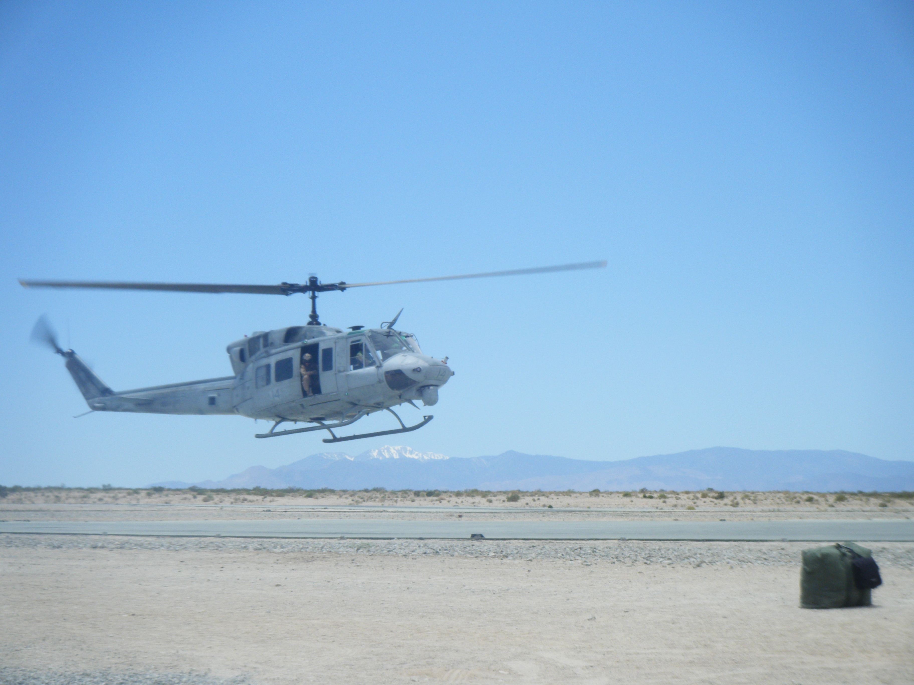
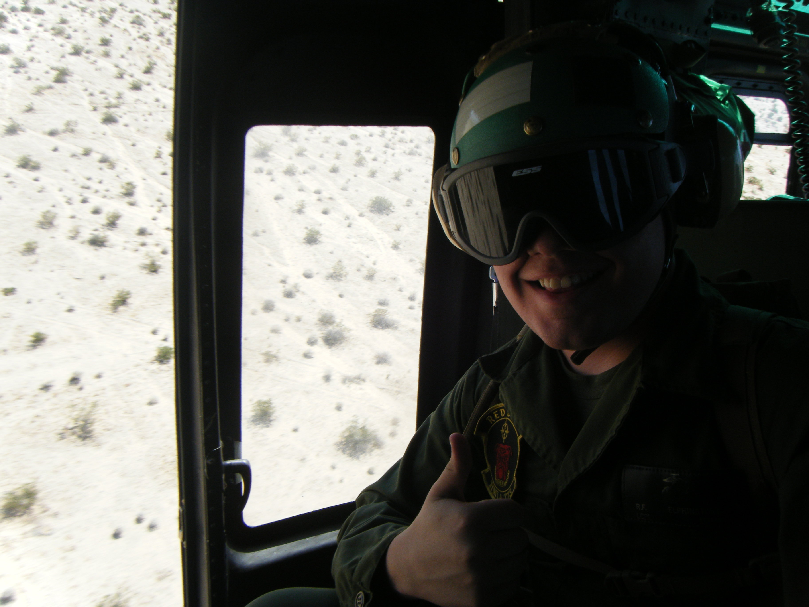
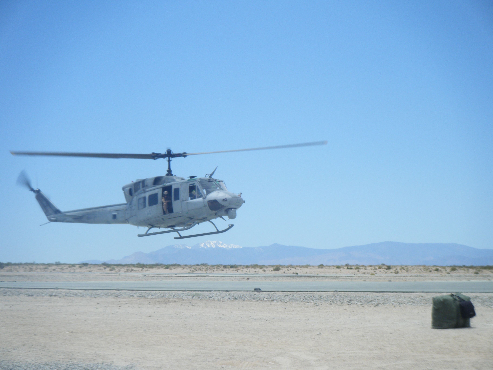
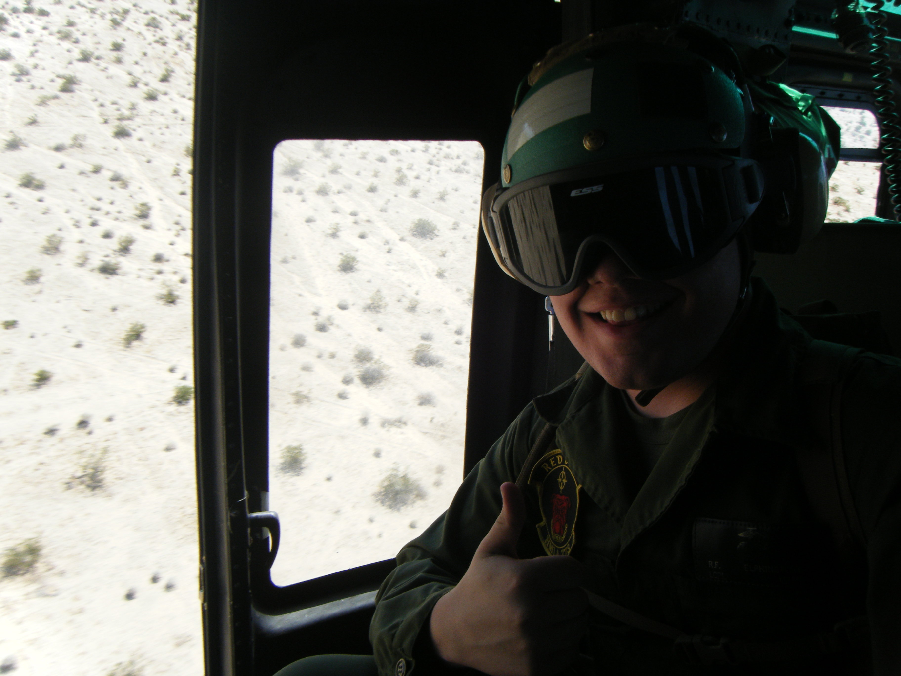
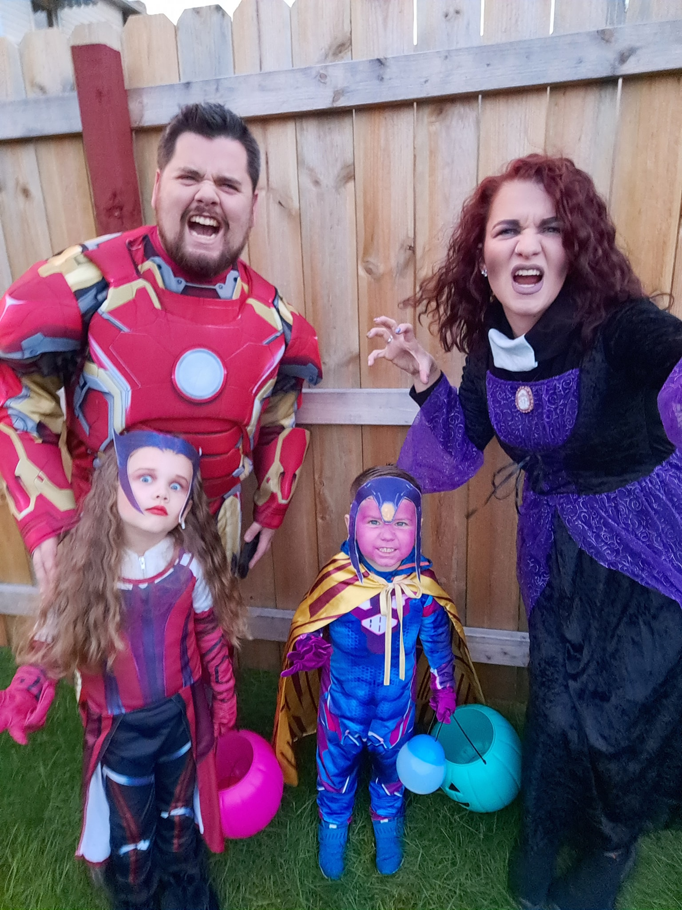
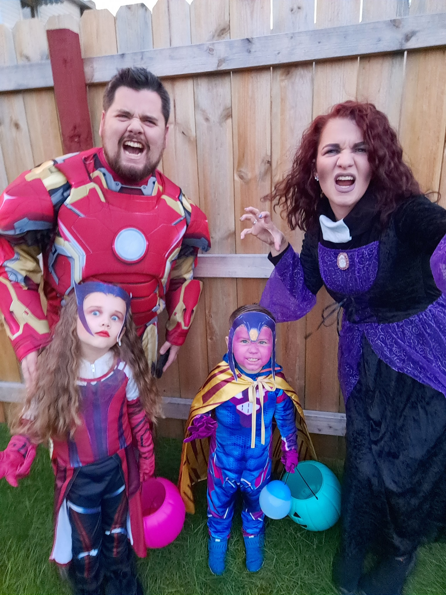

United States Marine Corps
Performed scheduled and unscheduled maintenance on AH-1 Cobra and UH-1 Huey helicopters in accordance with operation schedules. Duties included general inspections of aircraft, troubleshooting and repair of hydraulic systems, flight controls, inspections and repair of airframes of both aircraft including metal fabrication and fiberglass work, helicopter tow crew operations, general clean up of work areas, and USMC combat readiness training.
 



UPMC
Performed repair and modification of structural and electrical engineering systems of the Hospital. Participated in On-Call 24/7 Rotation with team members in department. Enhanced work order efficiency with Agile methodologies within the department to increase survey satisfaction score of department by over 25 percent. Built relationships in working with other departments to help improve patient care. Skills: Critical Thinking, Communication, Customer Service, Electrical, Electronic Repair, Electronic Installation, Microsoft Teams, Excel, Word, Outlook, EPRO- Purchasing, Mechanics, Carpentry, and Plumbing.
Norfolk Southern
Here I completed a 2 year apprenticeship to become Journeyman. Performed scheduled and unscheduled maintenance on diesel locomotives. Responsibilities included inspections in accordance with FRA regulations, general knowledge of a multitude of tools and machine equipment, crane operations, repair of locomotive components including heavy engine work, airbrake system test and troubleshooting including 26L/ CCB 2/ CCB 26/ EPIC airbrake systems with air dryers 975/ 994, traction motor removal and installation, locomotive movement, heavy equipment movement, general replacement of fuel system, airbrake, water pump and system, oil pump and system components, machining wheels to size increments of 1/16, alignment of rotating equipment and generators, and general clean up of work areas.
Family
Married in 2012, my amazing wife and I have had the greatest pleasure of raising our two kids. Although I can say that there are always hard new challenges, it has been the greatest and most rewarding part of my life. They not only are talented and smart, but they are a complete blast to go on all of life's adventures.
 

Outdoor Fun
There are a number of extra activities I enjoy. One is my interest in aviation. I have a number of logged Pilot in Command hours that I hope to one day acquire my Private Pilot License. Another hobby is playing paintball. With a high amount of physical endurance and tactical skills, I always have a blast playing with family and friends. Finally is just being outdoors in general. I enjoy going camping and hiking with the occasional white water rafting trip during the summer months and some snow boarding during the winter when I can.